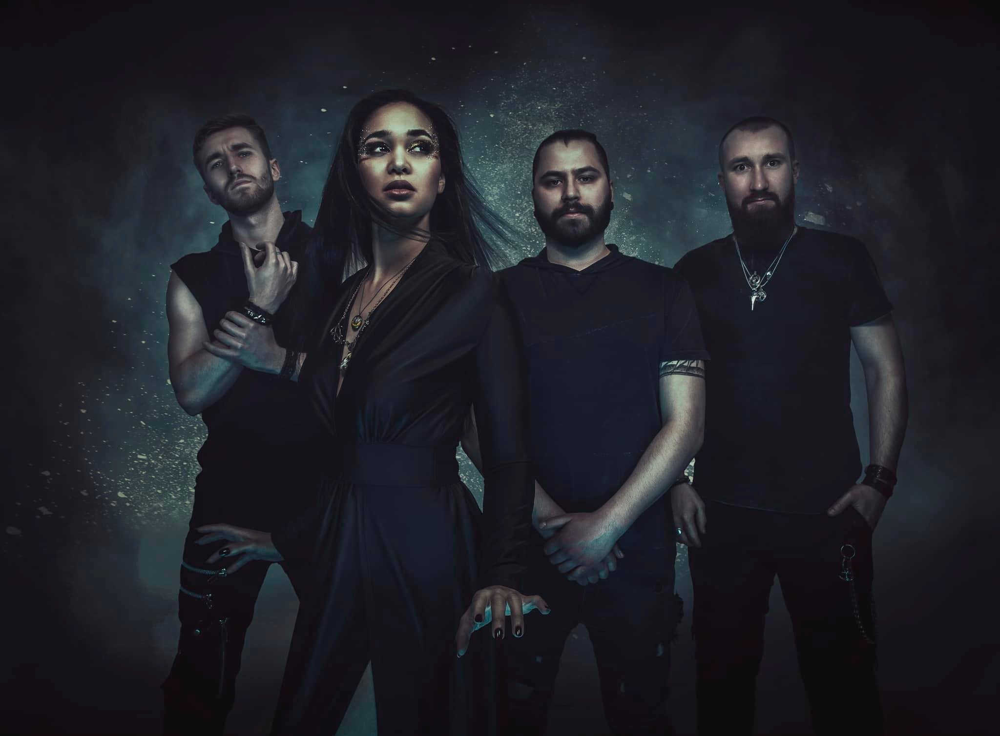
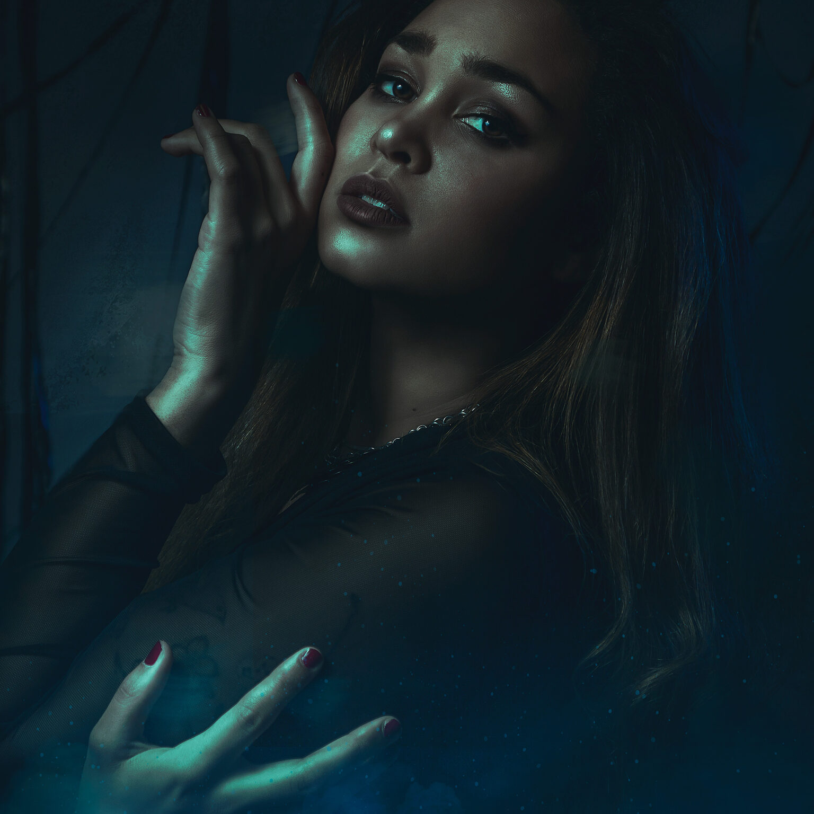
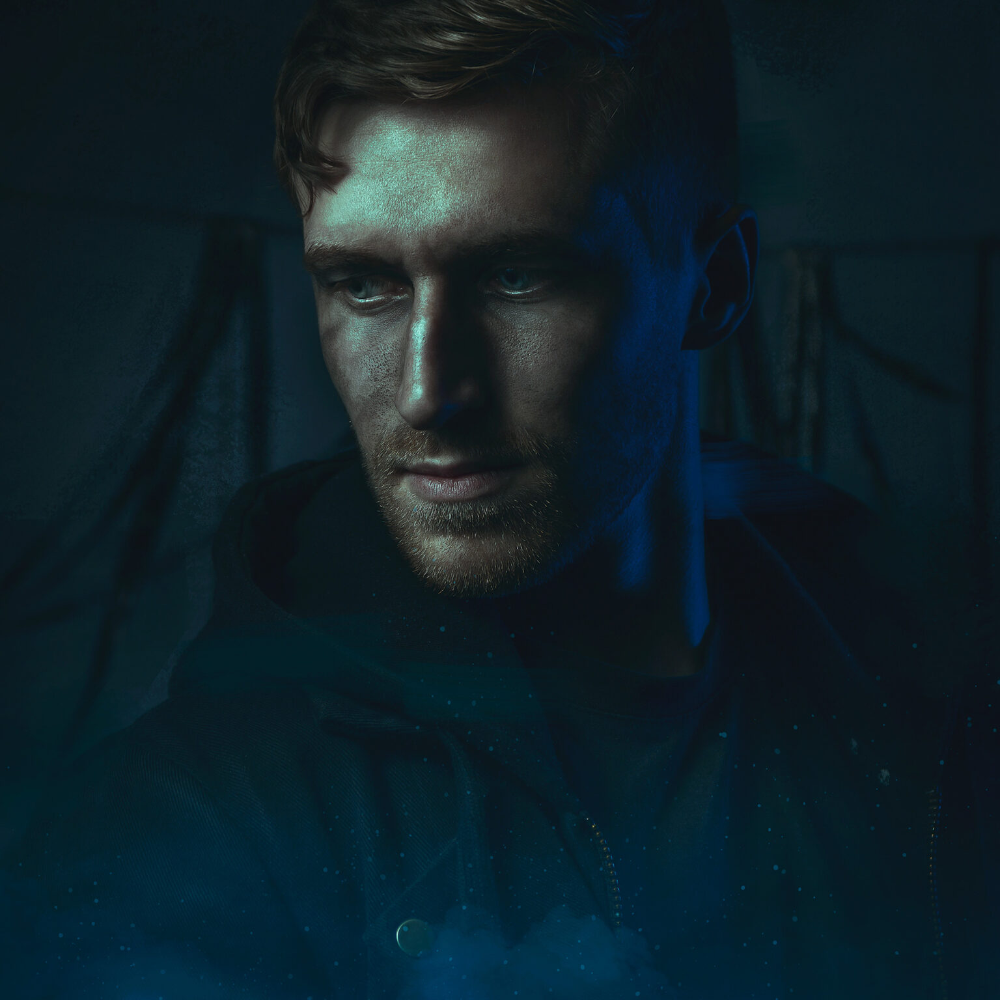
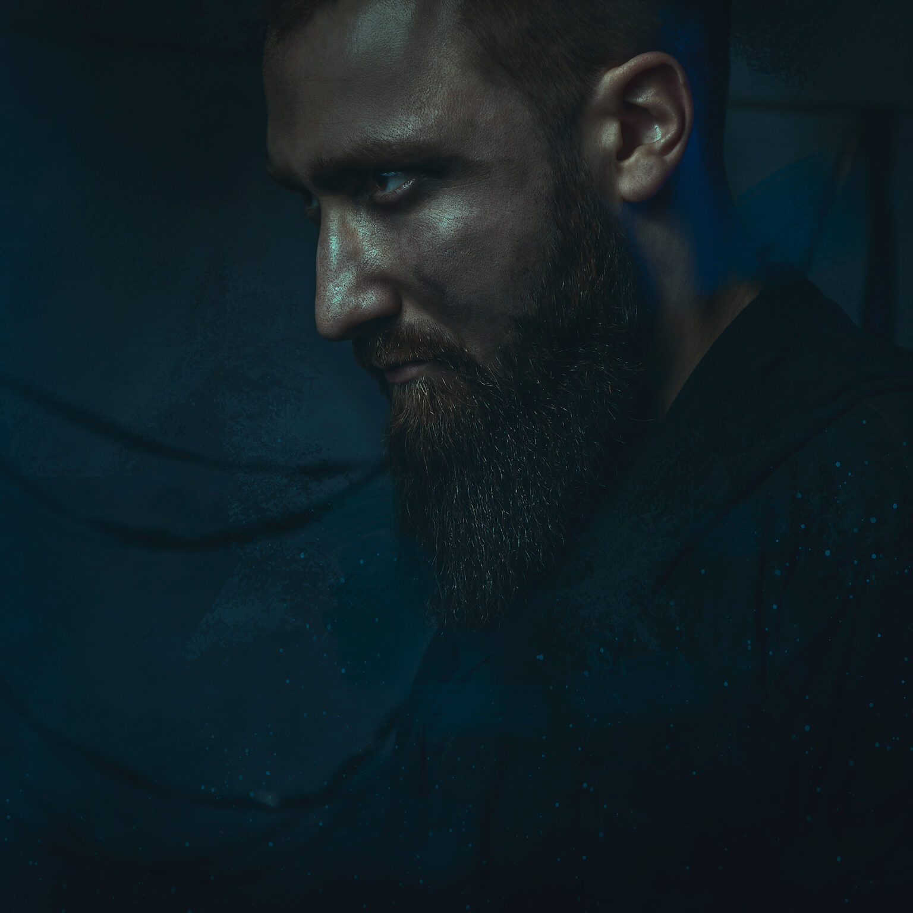
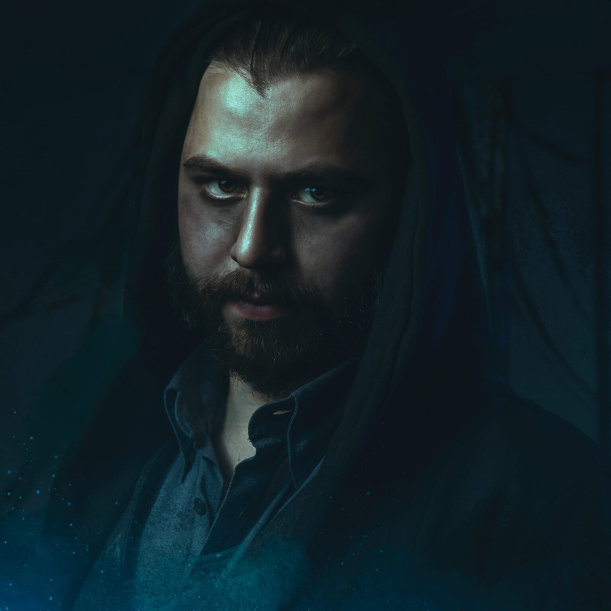

Ad Infinitum is a Swiss/German symphonic metal band. Originally a solo project of Swiss singer-songwriter Melissa Bonny, it turned into a full band with arrival of drummer Niklas Müller, bassist Jonas Asplind and guitarist Adrian Theßenvitz. The band signed a deal with Napalm Records in July 2019 and released a debut album – Chapter I: Monarchy – in April 2020. In December 2020, Jonas announced he is leaving the band due to health issues, to be replaced by Korbinian Benedict as the new bassist.
Born in Montreux, Switzerland on January 23rd, 1993, Melissa started music when she was only 6 years old by singing in a school choir for several years. When she finished school, she spent most of her free time making music by herself or with some friends and took part in several events in her area, singing on stage, alone or with other musicians, before joining a cover band in 2012. She left the project at the end of the same year to join the Symphonic Folk Metal band Evenmore as lead vocalist, which gave her the opportunity to release her creativity while writing music and the chance to broaden her horizons and perform on great stages before well-known bands such as Lacuna Coil, Eluveitie or Xandria. In 2015, she joined the trance metal band Rage Of Light and release an EP and an album with them. She decided to leave both Evenmore and Rage Of Light to focus on her main project: Ad Infinitum. Since 2018, Melissa is the founding member and frontwoman of Ad Infinitum. The beginning of a beautiful journey together with Niklas, Korbinian and Adrian. Beside Ad Infinitum, together with Hans Platz and Jenny Diehl from Feuerschwanz and Morten Løwe Sørensen from Amaranthe, she is part an ambitious project called The Dark Side Of The Moon. A band revisiting the classic of cinematography and gaming, transforming them into epic metal tracks. She is also known for her collaborations with other artists and bands such as Feuerschwanz, Rock Meets Classic, Warkings and more… Voice: mezzo-soprano & guttural
Adrian Theßenvitz was born in Munich in 1996 and began to learn classical guitar at the age of six. He played jazz standards with his father and brother daily and began playing jazz concerts at the age of eight. He also learned flamenco, rock and blues guitar and founded his first rock band in elementary school. Four years later he was inducted into the National Youth Jazz Orchestra of Bavaria and met Niklas Müller, today’s drummer of Ad Infinitum. 2011, he moved to Leipzig with his family and continued the bigband workshops in Saxony, which gave him access to the local musician scene and numerous groove and jam sessions. At the age of 16, his desire to become a professional musician was strengthened. He fell in love with the sound of Joe Satriani and Yngwie Malmsteen and practiced every guitar technique that exists. Every weekend he played in the pubs of Leipzig with his funk / groove band ‘Soultraders’, earning his money during high school. After school, he attended the Popkurs in Hamburg, took guitar lessons by Germany’s ‘First Call’ studio guitarist Prof. Peter Weihe, took two years of private lessons with Prof. Christian Röver, Prof. Werner Neumann and Martin Miller (Ibanez Signature Artist). He is currently completing his jazz guitar studies at the music university Cologne in autumn 2019. During the study, numerous contacts were made. He worked with the progressive rock band ‘PINSKI’, the crossover band ‘Barking Bird’, with the folk / pop songwriter Jördis Tielsch and the Cologne singer Paul Köninger, with whom he produces his Metalcore band ‘Schwarzlicht’ and also organizes his own festival evenings. His teachers at the university were Prof. Frank Haunschild and Bruno Müller (Sarah Connor, Chaka Khan, Gloria Gaynor, Udo Jürgens, Lena Meyer-Landruth, Till Brönner, Max Mutzke, etc.). After 10 years, he met Niklas Müller at a ‘Serenity’ concert in Cologne again .. Shortly thereafter, he joined at the request of Niklas Ad Infinitum.
Korbinian Benedict was born on 17th of August 1989 in Munich, Germany. At the age of 5 he started taking classical guitar lessons after he saw his kindergarten teacher playing the guitar. At the age of 14 he started his first band with some of his friends and switched to playing bass. Sadly the band lasted only for one and a half years and the bass had to sit in the corner while he returned to classical guitar. At the age of 18 his craftmanship as a bass player was once again needed. This time he decided to stay a bass player. After his alternate service he started his musical education first at “Berufsfachschule für Musik Nürnberg” (music college) and directly after it moving up to “Hochschule für Musik Hannover”. After graduating he moved to Cologne where he met and played with a certain guitar player by the name of Adrian Thessenvitz. And the rest is history…
Born on the 11th March 1995 in Kulmbach, Germany, Niklas started to hit things that looked or sounded like drums since his 4th birthday. Drum lessons started soon after this. He finally got his first drumset in 2002. In 2007 he started to play the guitar because „guitarists are way cooler on stage“. Quote from a 12-year-old. Classic. Being involved in several jazz/rock/pop projects during school, he discovered his love for metal music. He joined the band Devilizer in 2011, which was a metal cover band at that time. After more projects and finishing school, in 2015 Nik moved to Mannheim and started studying drums at Popakademie Baden-Württemberg, taking drums and guitars lessons from Udo Dahmen, Lui Ludwig, Benny Greb, Annika Nilles, Jost Nickel, Jan Zehrfeld, Michael Koshorreck and many more. After going back to Franconia in 2016 for some time for a job at a local record label he took guitars lessons from Christian Hermsdörfer. When Christian got the offer to become the guitarist of the german symphonic metal band Beyond the Black, he asked Niklas to become the guitar substitute and crew member/backliner of his other project Serenity. This led to quite a journey, starting with playing the 70.000 tons of Metal cruise in 2017, Magura Wave festival 2017, Rockharz festival 2018, a tour through the United Kingdom and a tour through Europe in 2018. In 2018 Devilizer (not a cover band anymore) released their debut album „The Obscuring“ Beside the backline jobs with Serenity, he worked as a backliner/guitartec/drumtec with Beyond the Black, Hämatom, Warkings, Kissin’ Dynamite, Fiddler’s Green and others. After these many gigs as a guitarist, Nik is really keen on playing (or hitting) his main instrument for Ad Infinitum again.
